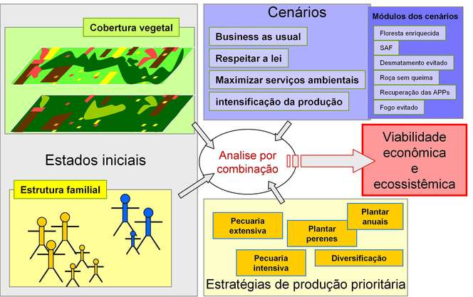
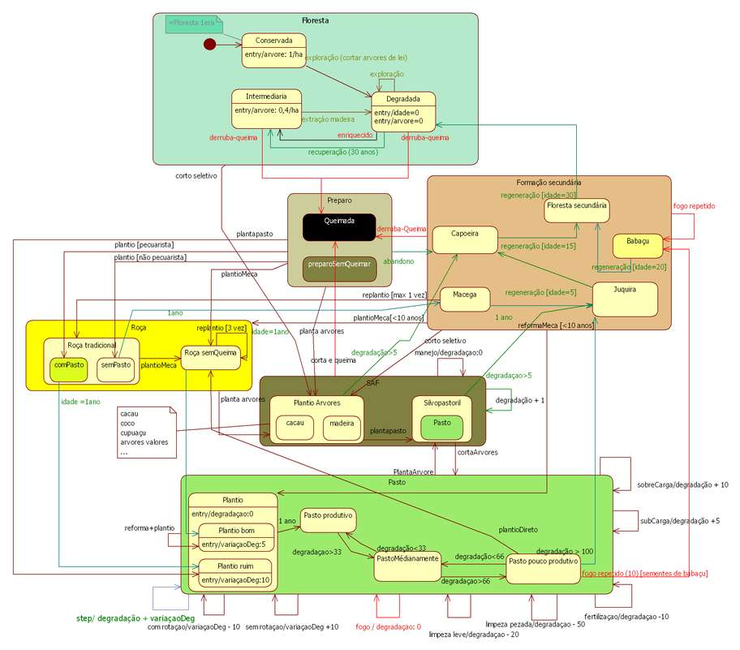
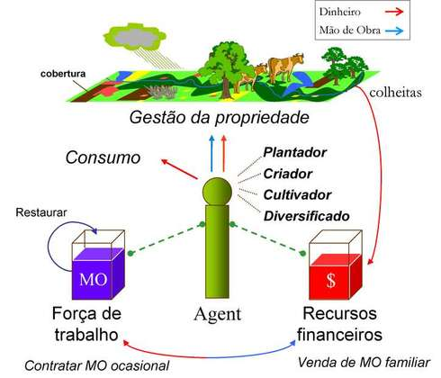
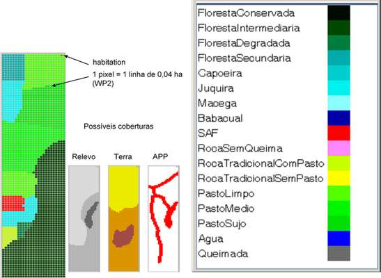
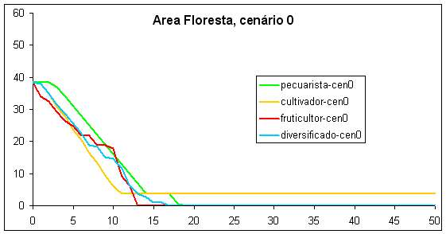
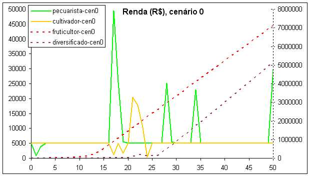
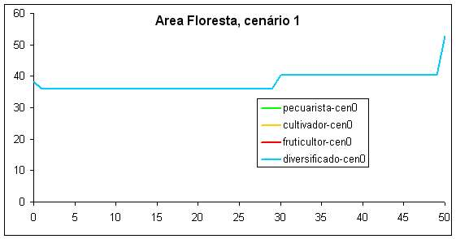
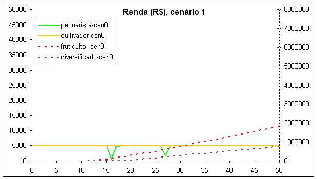

|
Modelo iLPF: integração Lavoura-Pecuária-FlorestaDiferentes estratégias de utilizacão do solo com a integracão Lavoura-Pecuária-Floresta e as conseqüencias em termos de Servicos Ambientais na Amazonia.
Página em construção Objetivo do ModeloO modelo iLPF tem como objetivo a avaliacão de cenários ligados a integracão Lavoura-Pecuária-Floresta na Amazonia. Os diversos cenários permitirão comparar diferentes estratégias de utilizacão do solo e as conseqüencias em termos de Servicos Ambientais. Os indicadores de comparacão devem permitir avaliar:
Quais cenários?Definimos 4 cenários:
Estes cenários são comparados aplicando-os em 4 estratégias de uso do solo correspondente a quatro tipos de atores. Cada atore-tipo prefere um padrão de gestão do seu estabelecimento de forma seguinte:
Um cenário é concebido como um conjunto de módulos inseridos nas atividades básicas e assim vão alterar as práticas. Estes módulos são:
Os cenários 0 correspondem aos cenários de "controlo". Não há restricão legal, nem remuneracão por Servico Ambiental. Os cenários 1: "Respeitar a lei". Módulos 6 e 7Cálculo do Passivo ambiental e criacão de um plano de recuperacão (30 anos para recuperar o passivo) com base no módulo 6 (descanso), se acima do limite da reserva legal e das APPs. Se abaixo do limiar, o agente não exceda os 50% do desmatamento, sem derrubar nas APPs, claro. Implementacão do módulo 7 (parar o uso do fogo no pasto), mas ele pode queimar e derrubar fora da reserva legal. Os cenários 2: "Maximizar a prestacão de servicos ambientais." Módulos 2, 3, 4, 5, 7 e 8Com base no módulo 5 (silvicultura). Cada ano,
Proibido de derrubar e queimar, mesmo se passivo ambiental é positivo. Receber uma compensacão por servicos ambientais. Os cenários 3: "Maximizar a intensificacão da producão". Módulos 1, 2, 5 e 7Intensificar a prioridade ficando dentro da lei. Introducão de novas práticas:
Além disso, sendo que a estrutura familiar tem um papel importante na viabilidade económica, as simulacões são repetidas a partir de inicializacões com uma famÃlia pequena e com uma famÃlia maior. Finalmente, a estrutura da vegetacão do estabelecimento no inÃcio também influencia os resultados. E por isso que para uma mesma famÃlia, uma mesma estratégia e um cenário determinado, as simulacões são aplicadas a um estabelecimento inicialmente em floresta e a um estabelecimento parcialmente desmatado. Para todas estas razões, o modelo é analisado através do cruzamento de todos os factores, tais como a figura seguinte resume:  Processo de analise do modelo Descricão do modeloO SMA ilPF é constituÃdo por dois módulos:. - O módulo fundiário representa a organizacão espacial. Situado ao longo de uma estrada vicinal, o lote de colonizacão de 100 ha é dividido em parcelas de 400 m2. A cada parcela atribui-se um tipo de solo, uma declividade e uma cobertura vegetal: floresta, capoeira ou cultura de subsistencia, perene ou forrageira. O rebanho é distribuÃdo em pastos com uma carga media de uma cabeca/há, na versão básica sem intensificacão. Cada cobertura possui atributos técnico-econômicos, sua própria dinâmica, suas exigencias em termos de mão-de-obra e de insumos e uma producão. Cada estacão, ele gera uma producão, que é imediatamente convertida em dinheiro no momento da colheita. Mas sem manutencão, sua produtividade diminui e ele acaba desaparecendo. Esse módulo espacializado calcula a producão de cada cobertura e faz com que evoluam naturalmente: sem produtor, uma paisagem evolui progressivamente em direcão a floresta. O diagrama de estado-transicão (ilustracão 3) mostra todas diferentes coberturas que existem no modelo e as maneiras de trocar de uma cobertura para outra, a traves das transicões. As transicões vermelhas correspondem as atividades humanas (deruba, plantio,...).  Diagrama de Estado-Transicão da cobertura vegetal O segundo módulo representa a famÃlia. Um agente (uma famÃlia de n membros) dispõe de dois recursos: sua mão-de-obra ativa, que ele utiliza para seus trabalhos ou que ele vende afora, e seu dinheiro, que ele recupera no momento das colheitas ou da venda de sua mão-de-obra. Ele gasta esse dinheiro para o consumo da famÃlia, os custos ligados aos trabalhos, a contratacão ocasional de forca de trabalho e a compra de vacas. Sua mão-de-obra equivale a uma quantidade de jornadas de trabalho disponÃvel que diminui com as tarefas realizadas. Essa quantidade é atualizada no inÃcio de cada estacão (Ilustracão 5).  diagrama sistemico de um produtor Alguns resultadosO modelo foi implantado na plataforma Cormas, mas todos os cenários ainda não foram finalizados. Hoje os cenários 0 "Business as usual" e 1 "Respeitar a lei" são implementados e estamos elaborando os cenários 2 e 3. Também temos que analisar os primeiros resultados para continuar verificar o bom funcionamento do SMA. Um código de cor foi associado para cada tipo de cobertura (Ilustracão 9). Os resultados seguintes são obtidos a partir de simulacões utilizando uma propriedade de 100 ha já parcialmente desmatada e com uma famÃlia de 5 membros cujo 3 activos. O cash inicial é de 1000 R$ por pessoa.  Resultados cenário 0Impactos sobre o desmatamento:  Exemplo de simulações (pecuarista e diversificado):
Dinámicas das rendas:  Resultados cenário 1Impactos sobre o desmatamento:  Exemplo de simulações (pecuarista e diversificado):
Dinámicas das rendas:  Assim o respeito estrito da lei pode permitir a conservacão da floresta e a recuperacão do passivo ambiental, mas o custo social é uma perda extrema de renda familiar. Para mais informação, contactar os autores. |
|